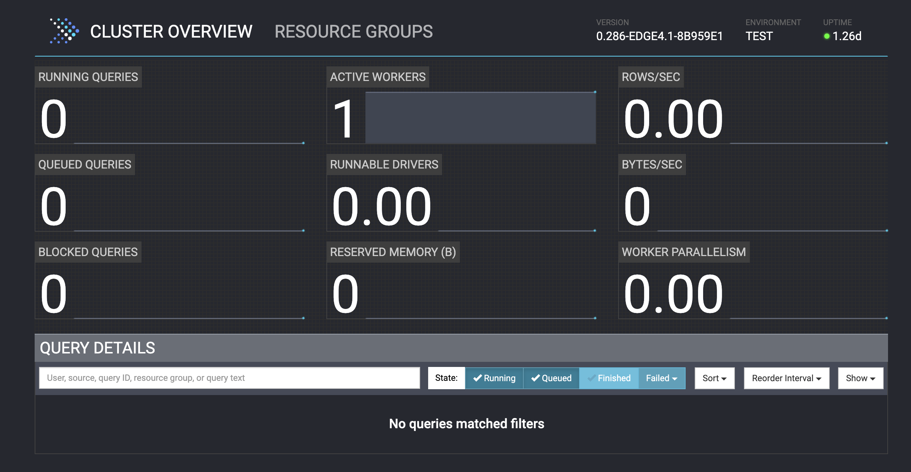

Set up an Open Lakehouse¶
In this section, you will use docker compose to create an open lakehouse with the following components:
- A MinIO s3 Object Storage as the data storage component
- A Hive metastore server to keep track of table metadata, and a MySQL database to store this metadata
- A single-node Presto cluster as the SQL query engine
This section is comprised of the following steps:
- Set up an Open Lakehouse
- 1. Build the minimal Hive metastore image
- 2. Spin up all containers
- 3. Check that services have started
- 4. Connect to Iceberg
1. Build the minimal Hive metastore image¶
In order to use Iceberg with Presto, we have to set up an underlying catalog. Recall that Iceberg is a table format rather than a catalog itself. The Iceberg table format manages most of its metadata in metadata files in the underlying storage (in this case MinIO s3 object storage) alongside the raw data files. A small amount of metadata, however, still requires the use of a meta-datastore, which when using Presto can be provided by Hive, Nessie, Glue, or Hadoop. This "Iceberg catalog" is a central place to find the current location of the current metadata pointer for a table. We are using the Hive metastore in this case.
We'll build a minimal Hive metastore image from the Dockerfile included in this repo.
- Open a terminal locally and run the following commands to build the Hive metastore image:
cd conf
docker compose build
You will see console output while the image builds. The build may take several minutes to complete. While we wait, let's go over some of the configuration options in the metastore-site.xml file that will be passed to the metastore container on startup. The following properties are of particular interest to us:
metastore.thrift.uris: defines the endpoint of the metastore service that we're using. The hostname supplied corresponds to thehostnamethat is assigned to our metastore container indocker-compose.yml(see below section). The port9083is the default port for the Hive metastore service. As with any URI,thrift://is the protocol by which communication takes place.javax.jdo.option.ConnectionURL: defines the URL of the underlying database that supports the metastore service (this is different from the underlying source for our table data, which is MinIO/s3). The hostname is again the hostname of the MySQL database container (again defined indocker-compose.yml), and the port is the default MySQL port. We also give a path to a specific database,metastore_db, that will act the storage for our metastorejavax.jdo.option.ConnectionUserNameandjavax.jdo.option.ConnectionPassword: the username and password required to access the underlying MySQL databasefs.s3a.endpoint: the endpoint that provides the storage for the table data (not the metastore data). The hostname and port given follow the same convention as those mentioned earlier.fs.s3a.access.keyandfs.s3a.secret.key: the username and password required for the metastore to access the underlying table datafs.s3a.path.style.access: we set this property to true to indicate that requests will be sent to, for example,s3.example.com/bucketinstead ofbucket.s3.example.com
Once the image has been buildt, we can move to step 2.
- Check that the
hive-metastoreimage has been successfully created:
docker image list
You should see a conf-hive-metastore image in your list of images, similar to this:
REPOSITORY TAG IMAGE ID CREATED SIZE
conf-hive-metastore latest 28377ad2303e 2 minutes ago 1.14GB
This means that the image has been created with the tag latest.
2. Spin up all containers¶
Bring up the necessary containers with the following command:
docker compose up -d
This command may also take quite awhile to run, as docker has to pull an image for each container. While we wait for startup to complete, let's go through some of the docker-compose.yml file to see how our open lakehouse is set up. This file defines everything about our multi-container application.
First, we define a network: presto_network. Each of our containers will communicate across this network.
The next section is the service section, which is the bulk of the file. The first service we define is that of the Presto cluster, which we have named presto-coordinator. We provide a human-readable container_name (also "presto-coordinator") and the Docker image that we want this service to be based on, which is the presto image with tag 0.286-edge4 hosted in the prestodb DockerHub repository. The value 8080:8080 means that we want to map port 8080 on the Docker host (left side of the colon) to port 8080 in the container (right of the colon).
We also need to supply the Presto container with some necessary configuration files, which we define using the volume key. Similar to how we defined the port, we're saying here that we want to map the files that are in the presto/etc directory (relative to our current working directory on the command line) to the location is the container corresponding to /opt/presto-server/etc, which is the directory that Presto expects to find configuration files. Here are the configuration settings for the Presto server as given in ./presto/etc/config.properties that we will pass to our server container:
coordinator=true
node-scheduler.include-coordinator=true
http-server.http.port=8080
discovery-server.enabled=true
discovery.uri=http://localhost:8080
node.environment=test
coordinator: defines whether this Presto server acts as a coordinator or not. Use valuetruefor a coordinatornode-scheduler.include-coordinator: defines whether the Presto server acts as a worker as well as a coordinator. We use the valuetrueto accept worker tasks since we only have one node in our Presto clusterhttp-server.http.port: defines the port number for the HTTP serverdiscovery-server.enabled: defines whether the Presto server should act as a discovery server to register workersdiscovery.uri: defines the discovery server's URI, which is itself in this casenode.environment: defines the name of the environment; all Presto nodes in a cluster must have the same environment name
Next we specify any necesssary environment variables. In this case, we give the username and password required to access our MinIO storage. Finally, we state that this container is part of the previouly-created presto_network, meaning it will be able to communicate with other services on the network.
Let's do the same for the hive-metastore service, which has a few lines we haven't seen yet. The build property is what allowed us to build the custom image located in the hive-metastore directory in the previous step. We'll specify the image that we just created as the image property value. We also give a hostname for this container, the value of which we supply in the metastore-site.xml configuration file, which itself is mapped to the appropriate location inside the container using the volumes property. The last property that we will call out is depends_on, which defines dependencies between our service containers. In this case, the mysql container will be started before the hive-metastore Presto container. This makes sense since the MySQL database needs to be running before the Hive metastore service can start.
You should now have the context you need in order to understand the configuration for the remaining services mysql and minio. These services don't require as much setup as the others. On the last few lines of the file, we define additional volumes. These are different from those that we created on the fly in the services section in that here we create named volumes that can be persisted even if some containers need to restart.
The output of the up command will look like the below when all containers have been started:
[+] Running 7/7
✔ Network conf_presto-network Created 0.0s
✔ Volume "conf_minio-data" Created 0.0s
✔ Volume "conf_mysql-data" Created 0.0s
✔ Container presto-coordinator Started 50.0s
✔ Container mysql Started 50.0s
✔ Container minio Started 50.0s
✔ Container hive-metastore Started 0.0s
3. Check that services have started¶
Let's also check that our relevant services have started.
docker logs --tail 100 minio
If started successfully, the logs for the minio container should include something similar to the below:
Status: 1 Online, 0 Offline.
S3-API: http://172.18.0.2:9090 http://127.0.0.1:9090
Console: http://172.18.0.2:9091 http://127.0.0.1:9091
We will be using the console address in the next exercise. Let's check that the Hive metastore is running with the following command:
docker logs --tail 50 hive-metastore
If the metastore service is up and running properly, you should see the below lines somewhere near the bottom of the logs, likely interspersed with other logging information.
...
Initialization script completed
schemaTool completed
...
2023-11-20 23:21:56: Starting Metastore Server
...
If the Hive metastore is up, the MySQL database also must be up because the metastore requires this on startup.
Now, let's check the coordinator node:
docker logs --tail 100 presto-coordinator
If the Presto server is up and running properly, the last lines of the output would like the following:
2023-11-14T04:03:22.246Z INFO main com.facebook.presto.storage.TempStorageManager -- Loading temp storage local --
2023-11-14T04:03:22.251Z INFO main com.facebook.presto.storage.TempStorageManager -- Loaded temp storage local --
2023-11-14T04:03:22.256Z INFO main com.facebook.presto.server.PrestoServer ======== SERVER STARTED ========
The Presto server will likely take the longest to set up. If you don't see any errors or the SERVER STARTED notice, wait a few minutes and check the logs again.
You can also assess the status of your cluster using the Presto UI at the relevant IP address: http://<your_ip>:8080. You should see 1 active worker (which is the coordinator node, in our case) and a green "ready" status in the top right corner, as seen below.

4. Connect to Iceberg¶
Our containers are up and running, but you may be wondering where Iceberg fits into all of this. Presto makes it very easy to get started with Iceberg, with no need to install any additional packages. If we started the Presto CLI right now, we would be able to create tables in Iceberg format - but how? Recall the volume that we passed to the presto-coordinator container. This volume includes a directory called catalog that was mapped to the /opt/presto-server/etc/catalog location in the container along with the other server configuration files. The catalog directory is where the Presto server looks to see what underlying data sources should be made available to Presto and how to connect to those sources. Let's take a look at the iceberg.properties file that was mapped to the Presto cluster.
connector.name=iceberg
iceberg.catalog.type=hive
hive.metastore.uri=thrift://hive-metastore:9083
hive.s3.path-style-access=true
hive.s3.endpoint=http://minio:9090
hive.s3.aws-access-key=minio
hive.s3.aws-secret-key=minio123
This file includes a required connector.name property that indicates we're defining properties for an Iceberg connector. It also lists hive as the Iceberg catalog type, as we're using the Hive metastore catalog to support our Iceberg tables, and supplies the URI for the Hive metastore. The remaining configuration options are specific to the Hive metastore and give the details needed in order to access our underlying s3 data source. When Presto starts, it accesses these configuration files in order to determine which connections it can make.
Note
Recall that the metastore.uri property is the same value defined earlier in the metastore-site.xml file that was used to configure the metastore service.
Leveraging high-performance huge-data analytics is as easy as that! Let's move to the next exercise to set up our data source and start creating some Iceberg tables.